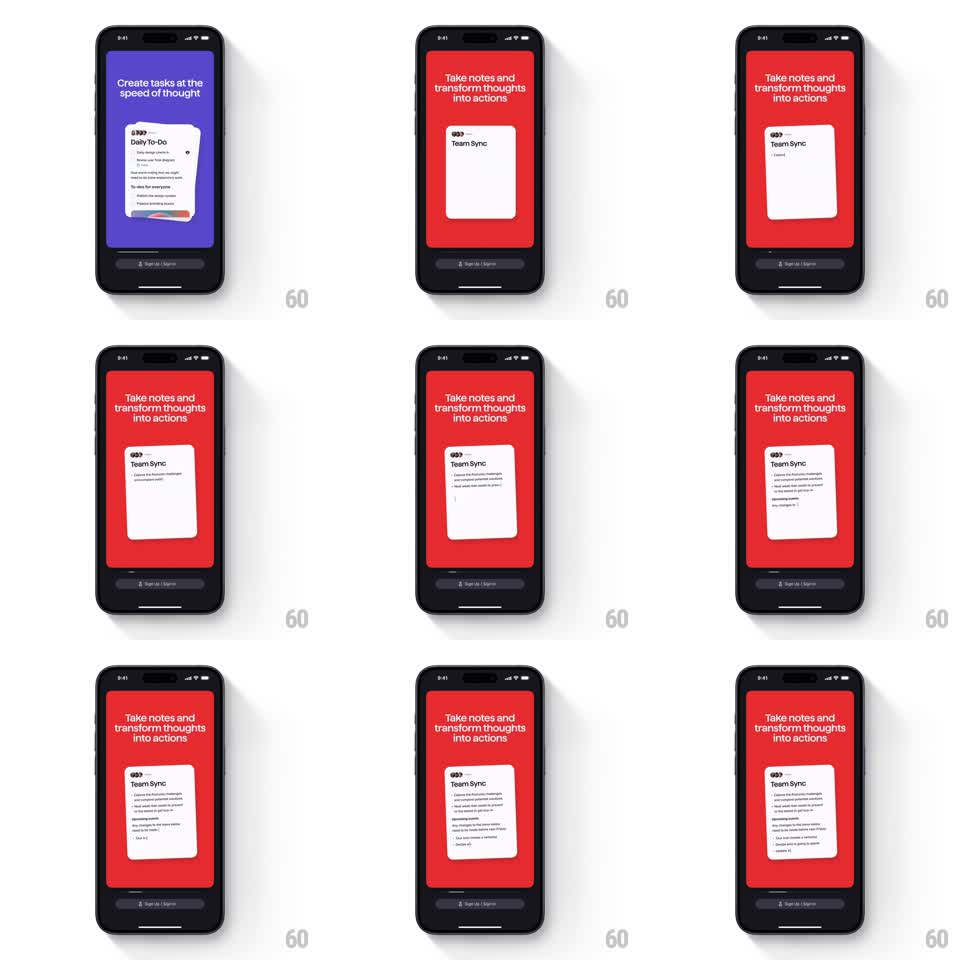

Media
Frame-by-frame

Rebuild this animation 1:1: Superlist's notes onboarding - the Team Sync note card auto-types its way from a title to a full meeting note, growing line by line on the red panel.

Rebuild this animation 1:1: Superlist's notes onboarding - the Team Sync note card auto-types its way from a title to a full meeting note, growing line by line on the red panel. ## Integration Integration: stack-agnostic spec - springs given as stiffness/damping, timed motions as duration + curve; map every value to your framework and animation library of choice. ## Scene Red panel with the headline "Take notes and transform thoughts into actions". Center: a white note card that starts with just "Team Sync" and a cursor, then fills itself: a first sentence, a bullet list, a "Meeting notes" section, and closing lines - the card growing taller with every addition. Bottom: the dark sign-up bar. ## Motion spec Pattern: auto-typing document with continuous card growth. - Text types character by character (~35ms/char) with a block cursor; line breaks land with a brief 150ms pause, section headers type slightly faster. - Bullets get their marker first (dash fades in, 100ms), then their text. - The card's height animates continuously to fit (spring ~320/30), never clipping a half-typed line - it grows a line ahead of the cursor. - The card keeps a gentle float (+-3pt vertical drift, 3s loop) so the panel never feels frozen between keystrokes. ## Calibration - Typing cadence is the texture: brisk for prose, pausing at structure (bullets, headers). - Growth follows the cursor, so the card's bottom edge is always in motion while typing. ## Reduced motion The note fades in fully written (300ms); card holds its final size. ## Don't miss - The note reads like a real artifact: title, prose, bullets, section header - not lorem lines. - The red panel and headline stay static; all life is inside the card.